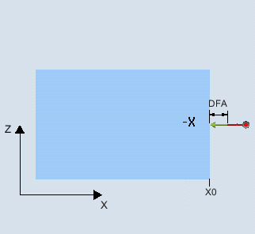
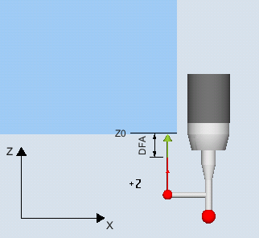

Diese Messvariante ermittelt die Lage einer achsparallelen Kante im Werkstückkoordinatensystem durch 1-Punkt-Messung.
Beim Einsatz von Messtastern mit Seitenausleger (L-Taster, Typ 713) besteht die Möglichkeit des ziehenden Messens in positiver Richtung der Werkzeugachse.
Bei der Messmethode "3D-Taster mit Spindelumschlag" wird die Messung in den Achsen der Ebene als Differenzmessung ausgeführt. Es erfolgen automatisch nacheinander zwei Messungen, einmal mit 180 Grad Spindelposition und einmal mit 0 Grad. Der besondere Ablauf dieser Messung erlaubt die Verwendung eines unkalibrierten multidirektionalen Messtasters. Der korrekte Werkzeugradius des Messtasters muss allerdings einmalig durch Kalibrieren (Abgleich) des Messtasters bestimmt werden. Die Messtastertypen 712, 713 und 714 sind dafür nicht geeignet. Eine positionierbare Spindel ist zwingend erforderlich.
Bei der Messmethode "3D-Taster ausrichten" wird die Schaltrichtung des Messtasters immer entsprechend der aktuellen Messrichtung ausgerichtet. Diese Funktion wird bei hohen Anforderungen an die Messgenauigkeit empfohlen. Die Messtastertypen 712, 713 und 714 sind dafür nicht geeignet. Eine positionierbare Spindel ist zwingend erforderlich.
Das Ergebnis der Messung (Messdifferenz) kann wie folgt verwendet werden:
Korrektur einer Nullpunktverschiebung
Korrektur eines Werkzeugs
Messung ohne Korrektur
Eine erweiterte Werkzeugkorrektur in Schwesterwerkzeuge sowie Summen- und Einrichtekorrekturen ist möglich. Bei der Werkzeugkorrektur können generell Erfahrungswerte eingerechnet werden.
Der Messzyklus ermittelt den Istwert eines Messpunktes, unter Berücksichtigung der Kalibrierwerte, an einer Kante des Werkstückes, bezogen auf dessen Nullpunkt.
Es wird die Differenz zwischen dem aktuellen Istwert (Messwert) und einem vorgegebenen Sollwert in der parametrierten Messachse berechnet.
|  Messen: Kante (CYCLE978) |  Messen: Kante (CYCLE978) |
Der Messtaster muss als Werkzeug aktiv sein.
Werkzeugtyp des Messtasters:
3D Multi-Taster (Typ 710)
Monotaster (Typ 712)
L-Taster (Typ 713)
| Hinweis |
Anwendung L-Taster (Typ 713)Mit dem L-Taster ist das Messen in +Z (für ziehendes Messen) möglich. Die Grundausrichtung des L-Tasterauslegers ist nach +X (Korrekturwinkel = 0). Soll der Tasterausleger im Messprogramm in eine andere Richtung ausgerichtet werden, kann dies durch eine Drehung um die Werkzeugachse (z. B. ROT Z = 90) erfolgen. |
Sterntaster (Typ 714)
| Hinweis |
Folgende Messmethoden sind nur in den Achsen der Ebene möglich:
Für diese Messmethoden können die Messtastertypen 712, 713 und 714 generell nicht verwendet werden. |
Bei Einsatz der Messvariante auf Drehmaschinen:
Messtastertyp 710 oder 580 verwenden
Den Längenbezug des Werkstückmesstasters auf die Mitte der Messtasterkugel einstellen:
MD51740 $MNS_MEA_FUNCTION_MASK, Bit 1 = 0
| Hinweis |
In Verbindung mit den Funktionen "3D-Taster mit Spindelumschlag", "3D-Taster ausrichten" oder bei Verwendung der Messtastertypen 712, 713 und 714 ist eine SPOS-fähige Spindel erforderlich. |
Der Messtaster ist im Abstand etwas größer als der Messweg (DFA) gegenüber der zu messenden Fläche zu positionieren.
Nach Beendigung des Messvorgangs steht der Messtaster mit seinem Kugelumfang im Abstand des Messweges DFA der Messfläche gegenüber.
Siehe auch:
Messen: Kante (CYCLE978)